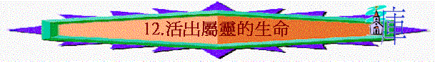

第十二課 活出屬靈的生命
〔六：１－１８〕
本課要旨：進入第六章，保羅仍繼續教導加拉太人，當如何行事為人，及如何挽回那些曾犯錯的肢體，並提醒作基督徒應有的責任。最後他帶出自己最深的經歷－－第四個十字架的真理，作為全書的結束。
１．在〔六：１〕中：（註一）
ａ．這裡所說「屬靈的人」是甚麼人﹖
ｂ．挽回犯罪的肢體當留意甚麼原則﹖
２．「基督的律法」指甚麼﹖我們應怎樣完全這「律法」﹖〔六：２，４；另看五：１４；羅十三：８〕
３．人在生活裡，最容易犯上甚麼心態上的毛病﹖〔六：３－５〕（註二）
ａ．
ｂ．
ｃ．
４．我們應如何避免犯上以上的幾種毛病﹖〔六：４〕
ａ．
ｂ．
５．〔六：２〕與〔六：５〕的兩種「擔」有何不同﹖（註三）
* 六：２ * 各人的「重擔」要互相擔當 *
* 六：５ * 各人必擔當自己的「擔子」 *
６．當我們的「擔子」太重時（〔六：５〕的那種），應怎辦﹖
７．在〔六：６〕所指的「受教者」是誰﹖「施教者」又是誰﹖而「受教者」又有何責任﹖你有沒有履行此責任呢﹖（註四）
８．在〔六：７〕所提及的「自欺」，是否指〔六：３〕的「自欺」﹖請思想此話的嚴重性。
９．請看下面屬靈因果律的分析（注意神的警告）。〔六：７－８〕
| 經文 | 因 | 果 | 警告 |
| 六：７ （理論） | 種甚麼 | 收甚麼 | 神是輕慢不得 |
| 六：８上（反面事實） | 順情慾撒種 | 收敗壞 | |
| 六：８下（正面事實） | 順聖靈撒種 | 收永生 |
從經文可見，我們今天所投資的，正不知不覺的影響我們將來永存的
收成！請檢討我們今天所種的是甚麼，及思想需要重新較正之處。
（註五）
10．我們行善，有甚麼地方需要注意﹖〔六：９－１０〕（註六）
ａ．態度上：〔參帖後三：１３〕
ｂ．時間上：
ｃ．對象的優先次序上：〔參提前五：８〕
請分享你曾向人行善的經歷。
11．保羅忽然提及自己親手寫的字是何等的大，有何用意﹖〔六：１１〕
12．請指出假弟兄的錯誤，並思想每種錯誤的含意。〔六：１２－１３；
太廿三：３－５〕
ａ．
ｂ．
ｃ．
13．〔六：１４〕出現本書第四個十字架。請填上下面空格，後答問題。
| 角度 | 觀察者 | 被釘者 | 結局 |
| 第一角度 | 就 1.___________ | 而論 * 2.___________ | 已經釘在十字架上 |
| 第二角度 | 就 3.___________ | 而論 * 4.___________ | 已經釘在十字架上 |
ａ．「世界」代表甚麼﹖〔六：１４；約壹二：１５－１７〕
ｂ．試從第一角度去解釋「世界已經被釘在十字架上」這句話。
ｃ．試從第二角度去解釋「我已經釘在十字架上」這句話。
ｄ．保羅深深經歷十字架的功效，請思想這功效是否發生在你身上呢﹖
14．如何能作新造的人﹖〔六：１５；林後五：１７〕
15．「此理」是指甚麼﹖保羅為何提及「神的以色列民」而不說加拉太人呢﹖〔六：１６；羅二：２８－２９〕（註七）
16．保羅身上「耶穌的印記」何解﹖我們是否也有此印記呢﹖〔六：１７〕（註八）
17．保羅只簡單的用「願我主耶穌基督的恩常在你們心裡」作本書結尾的祝福語，有何用意﹖〔六：１７〕
第十二課附註：
註一：「所勝」原文是「取食」之意。
註二：「無有」呂譯「不是了不起」。
註三：1)「重擔」KJV, NIV 譯 " burden "。2)「擔子」NIV 譯 " load "。
註四：「把一切需用的供給」新譯「分享自己一切美物」。
註五：「情慾」原文是「肉體」。
註六：「到了時候」新譯「到了適當時候」。
註七：「此理」新譯「準則」。
註八：「印記」原文是「烙印」的意思。\
參考答案:
第十二課：活出屬靈的生命
１．ａ．狹義上指那些沒有被異端迷惑的人，廣義上指在平日能站穩在真理中的人，並有愛心去挽回弟兄者。
ｂ．要用溫柔的心，但也要小心被異端引誘。
２．是指彼此相愛的生活。各人有各人的擔子，但要互相擔負、彼此相愛，這才滿足了基督的律法。
３．ａ．自欺：指本來自己是沒有的，卻欺哄自己，自以為有。
ｂ．自誇：是與別人比較而產生的〔六：４〕。
ｃ．懶惰：不負自己應有的責任（擔自己的擔子）〔六：５〕。
４．ａ．察驗自己的行為。
ｂ．專在自己，不在別人。意即不與別人比較而自誇，只求自己在神面前是否活得對。５．〔六：２〕與〔六：５〕所提及的擔子，在原文是用兩個不同的字。〔六：２〕的「重擔」是指在心靈上的壓力，乃是超過一個人所能承擔的重擔；如傷心、苦痛、失望等。基督徒要互相分擔這種擔子，去減輕同伴的重擔。而〔六：５〕的「擔子」則是指在責任上的擔子，如個人繳交稅項等。這些擔子有的是別人所不能分擔的，是我們個人有責任去負起的擔子〔羅十四：１２；林前三：１０－１５〕。
６．不要忘記神的應許〔詩五五：２２〕，並要知道主是那位天天背負我們重擔的主〔太十一：２８－２９〕，當將事情交託祂。
７．受教者指弟兄姊妹。施教者指教會的牧者。信徒有責任供給牧者的需用；而且不單是責任上，乃是出於愛心，分享自己所享有的一切﹖
８．這個「自欺」乃是指下文所論及應不自欺而行善的事而言（因為是緊接句）。人常自欺不行善，只期望明天會有好的結果，卻忽視今天應在屬靈的路上撒下善種，這實在是很嚴重的事，卻十分普遍。
10．ａ．不要灰心。要有心理準備有時向人行善，對方未必會領情，但仍勉力的去行。
ｂ．要忍耐。相信神的應許，到了神的時候就有收成。
ｃ．先看顧自己的家人，然後是神家裡的人，最後是未信主的人。
11．表示這是他的親筆信，並非是別人代筆的。從此可見他是何等重視此信，因事態嚴重。
12．ａ．只重外表，不重內心，並自誇自己肉體的長處。他們因有受割禮而加拉太人則無，他們以此為優點、為自誇之處〔六：１２上、
１３；太廿三：５〕。
ｂ．勉強別人守律法，而自己卻不守律法，能說不能行〔六：１２下，１３；太廿三：３－４〕。
ｃ．怕為信仰而來的逼害〔六：１２〕。
13．1. 我；2. 世界；3. 世界；4. 我。
ａ．世界可代表它一切吸引人的地方；如事物、群眾、玩樂、罪惡、誘惑等。
ｂ．凡釘在十架（木頭）上的都是被神咒詛的〔三：１３〕，可見世界的一切誘惑、罪惡等，都是神所憎惡的。此外，世界既被釘在十架上，就像死了，就失去它的活動力，也失去對保羅的吸引力。關鍵在於十字架的功效。
ｃ．對保羅而言，他已死在十字架上，他與世界已斷絕了一切關係，一切的東西像是都已過去；世界亦已失掉保羅，它也不能攪擾一個已死的保羅，因世界看他為已被釘死了。世界只會吸引那些仍在世界上活動的人，而保羅已是不屬世界了。關鍵亦是在於十字架的功效。
14．在基督裡便能作新造的人。
15．「此理」是指全書所論「因信稱義」的真理，人接受福音就得到真平安。保羅用「以色列民」一詞正暗示甚麼人才是真的以色列民，就是那些不在乎外貌，只在乎內裡受割禮的人。注意本句是緊接著〔六：１５〕的。
16．「耶穌的印記」是指保羅心靈上的印記，即保羅認定他心裡已烙上「屬於耶穌」的印記，是有「十字架」永久的記號，非指在肉體上有印記。當時社會只有奴隸、罪犯、士兵等人身上才有肉身的印記。
17．加拉太就是因為離開恩召的主，失去了神的恩惠〔一：１６〕，所保羅再次強調，為要提醒他們。